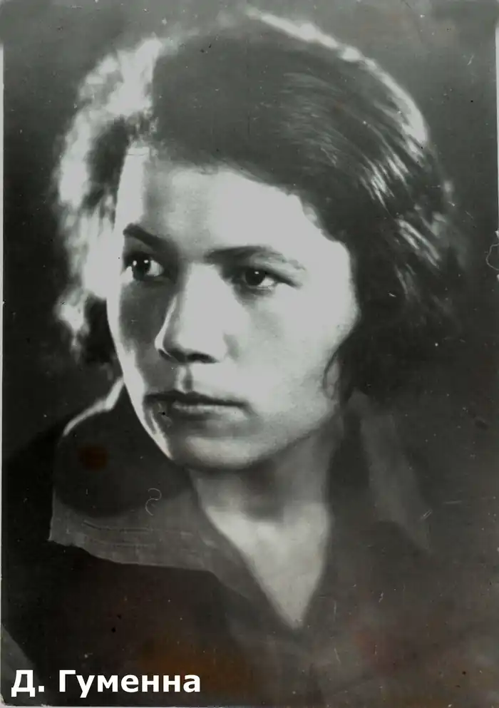
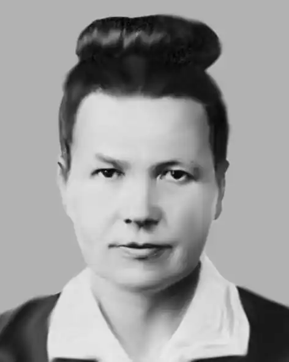

Гуменна Докія Кузьмівна (10 березня 1904, с. Жашків Київщина — 4 квітня 1996, Нью-Йорк) — українська письменниця, член ОУП "Слово". Літературна діяльність почалася в Україні в середині 20-х років. Літературна спадщина становить понад 30 томів.
Закінчила Інститут Народної освіти в Києві. У 1924р. з’явився друком перший нарис "У степу". Д.Гуменна належала до Спілки Українських Радянських Письменників "Плуг". Її репортажі "Стрілка коливається" (1930р.) та "Ех, Кубань, ти Кубань хліборобная" (1931р.), повість "Кампанія" звернули на себе увагу партійної цензури. З хвилею терору Д.Гуменна мусила замовкнути аж до початку Другої Світової війни.
Під час війни письменниця виїхала до Львова, далі — до Австрії, де почала упорядковувати свій літературний доробок, який не мала змоги друкувати в Україні. В Зальцбурзі виходить книга новел "Куркульська вілія" (1946р.), а згодом друкується її головний твір-епопея "Діти чумацького шляху" (Мюнхен — Нью-Йорк — 1948-1951рр.) Переїхавши до США Гуменна продовжує активну літературну працю. Авторка понад 20 прозових книг, що ставить Докію Гуменну серед найплідніших українських письменників у еміграції. Письменниця цікавилась історією та археологією України, давнім мистецтвом, шукаючи там генези духовного життя предків, прагнучи, за її словами, наблизити давні епохи до сучасності. Померла 4 квітня 1996 у Нью-Йорку. Похована на українському православному цвинтарі в Баунд-Бруку, штат Нью-Джерсі.